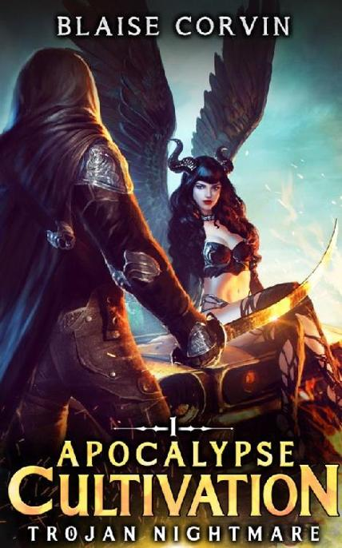
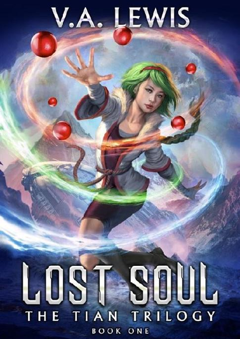
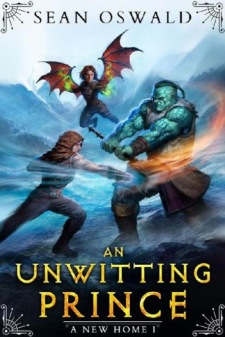
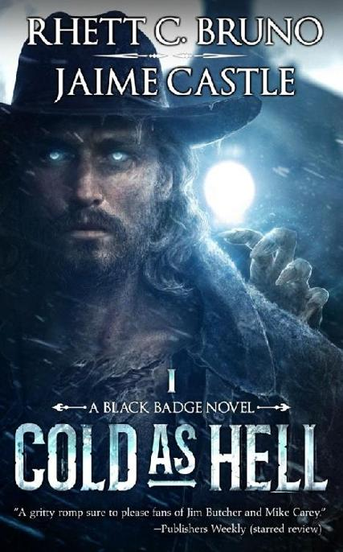
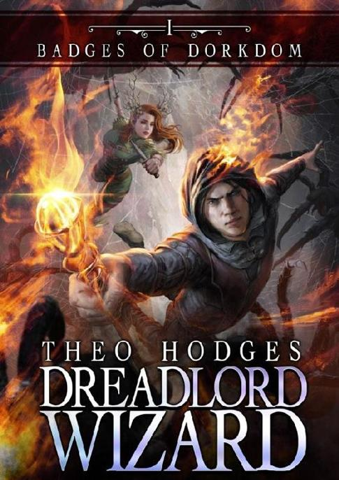
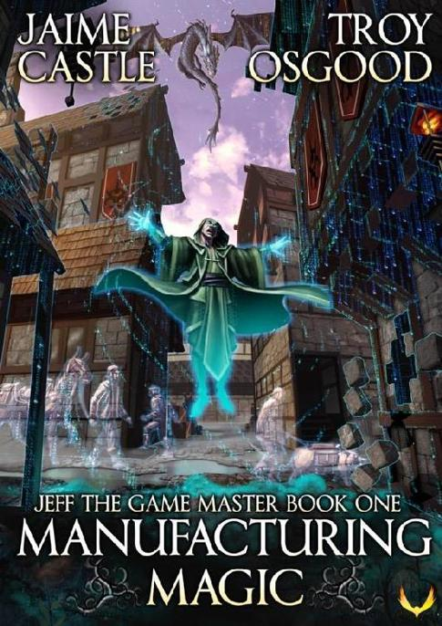

Thank you for reading The Primal Hunter
W e hope you enjoyed it as much as we enjoyed bringing it to you. We just wanted to take a moment to encourage you to review the book. Follow this link: The Primal Hunter to be directed to the book’s Amazon product page to leave your review.
Every review helps further the author’s reach and, ultimately, helps them continue writing fantastic books for us all to enjoy.
Want to discuss our books with other readers and even the authors like Shirtaloon, Zogarth, Cale Plamann, Noret Flood (Puddles4263) and so many more?
Join our Discord server today and be a part of the Aethon community.
Facebook | Instagram | Twitter | Website
You can also join our non-spam mailing list by visiting www.subscribepage.com/AethonReadersGroup and never miss out on future releases. You'll also receive three full books completely Free as our thanks to you.
Looking for more great books?

The Earth has been overrun with monsters... Post-Apocalypse America is unrecognizable from the past. Jake survives by working as the leader of a scavenging adventuring team. A former mage, now he follows the strange path of cultivation, taught to him by a mysterious traveler. As far as he knows, he is one of the only people on Earth with this power. Events will unfold that change Jake's life forever. Jake might even lose his very humanity while trying to do the right thing. But in return, perhaps he will grasp a second chance to save himself and others, to correct the past. He is about to be caught up in something much greater than himself. Will he be consumed by the machinations of greater powers? Only one thing is for certain. No matter how terrible the odds, Jake doesn't give up.

Death is a disease, and there is only one cure. Tian, a Cultivator at the precipice of ascension, is thwarted in her quest for immortality. Defeated, she escapes to another world with Levels, Classes, magic, and monsters. She becomes a Lost Soul. Her core begins to dwindle, but she does not abandon her goal. Working with a group of rebels in this new world, she opposes the unkillable tyrant Galgom to learn his secrets. Against his army of machines wielding laser guns and laser swords, she will cultivate her new powers, achieving Feats as she seeks her antidote: Immortality.

Coming of age is hard enough when you don't have to face monsters… When your family ends up stranded in a magical world, you don't have much choice. Jackson's class as an Ironwood Monk puts him right in the front line. He gets stronger the more he gets hit and can pass that on to the rest of the team. That is if he can get his mom to actually let him fight. No one, least of all Jackson fully understands the importance he holds for his family's future or that of all Talos. He will have to navigate challenges both in dungeons and the halls of power if he is to find A New Home. The next LitRPG series from the Amazon Bestselling author of Life in Exile, Sean Oswald is here. It’s perfect for fans of Dakota Krout, Luke Chmilenko, and Troy Osgood.

In the West, there are worse things to fear than bandits and outlaws. Demons. Monsters. Witches. James Crowley’s sacred duty as a Black Badge is to hunt them down and send them packing, banish them from the mortal realm for good. He didn’t choose this life. No. He didn’t choose life at all. Shot dead in a gunfight many years ago, now he’s stuck in purgatory, serving the whims of the White Throne to avoid falling to hell. Not quite undead, though not alive either, the best he can hope for is to work off his penance and fade away. This time, the White Throne has sent him investigate a strange bank robbery in Lonely Hill. An outlaw with the ability to conjure ice has frozen and shattered open the bank vault and is now on a spree, robbing the region for all it’s worth. In his quest to track down the ice-wielder and suss out which demon is behind granting a mortal such power, Crowley finds himself face-to-face with hellish beasts, shapeshifters, and, worse … temptation. But the truth behind the attacks is worse than he ever imagined … The Witcher meets The Dresden Files in this weird Western series by the Audible number-one bestselling duo behind Dead Acre.
Also available on audio, voiced by Red Dead Redemption 2’s Roger Clark (Arthur Morgan)

His first quest is to survive the day. Then, do the same tomorrow... When Kenny is chosen for InterRealm, a real-life wargame where defenders are portaled in from their homeworld, he is forced to survive in a violent fantasy landscape. Build a powerful presence in InterRealm and his homeworld will likely remain safe. Fail, and the invaders will break through. If there’s any consolation prize between Kenny getting to be a famous wizard, or building a Dread-fortress from the bones of his enemies, it may not be enough to make up for the fact that real live orcs are trying to kill him. To top it all off, the game master in his head couldn’t be any less impressed with his assignment. Someone obviously botched their chances when they chose future-college-dropout, Kenny. His opportunity to prove everyone wrong starts now…

When there's no way to win, cheat, and cheat BIG. Howard, desperate to save his friends and countless innocents, hatches a plan to fix things. Using his deep knowledge of game mechanics, he’ll start again as a level 0 necromancer and exploit his way to power.
For all our LitRPG books, visit our website.